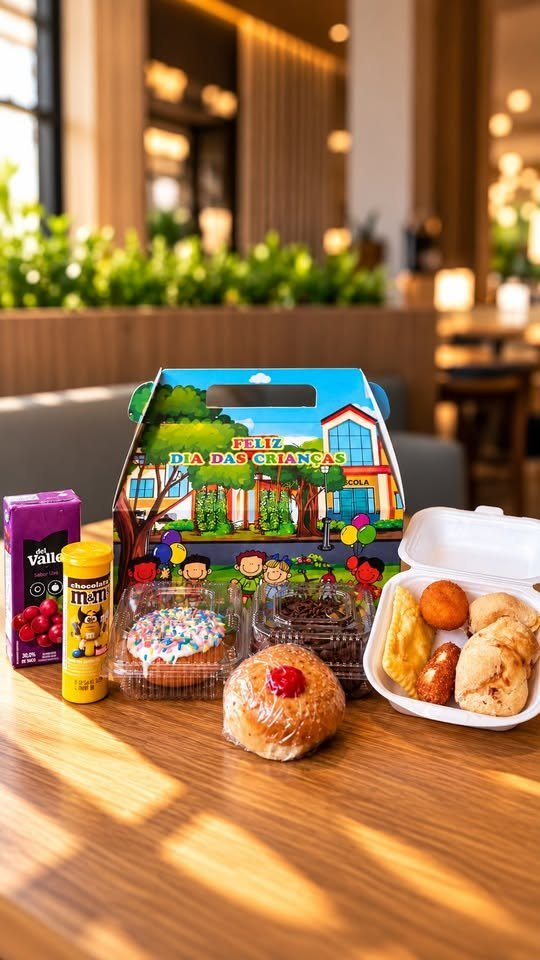
Dia das Crianças 2026
Padoca Lanche Feliz
Lancheira especial disponível só nos dias 09, 10 e 12/10, com retirada na padaria ou entrega. Quantidades limitadas.
Valor: consulte no WhatsApp.
Perguntar sobre a lancheiraDemonstração WolfStudio — não é o site oficial.
Seg a sex 6h30–20h · sáb 7h–18h · dom fechado
Loja nova desde abril de 2025
Café da manhã, almoço e café da tarde no Centro de Gaspar. Pães, bolos e cucas, do primeiro café até o fim da tarde.
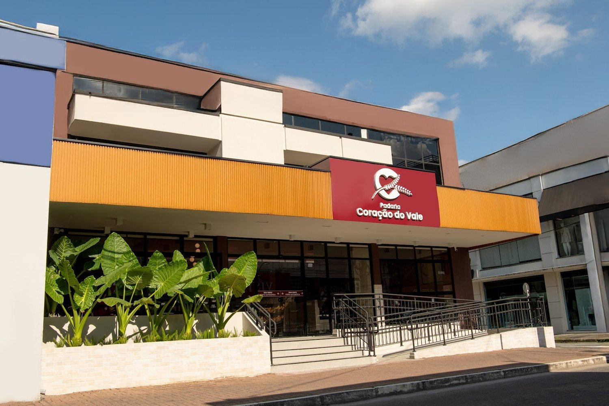
Buffet de café da manhã, pães, bolos e cucas. Para tomar ali mesmo ou levar para casa.
“Um ótimo lugar pra tomar um café, pãozinho bolo, cucas e muito mais...”
destaque das avaliações no Google
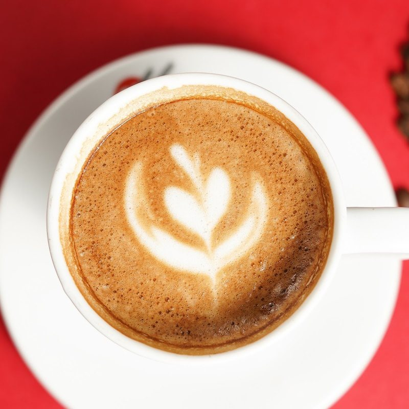
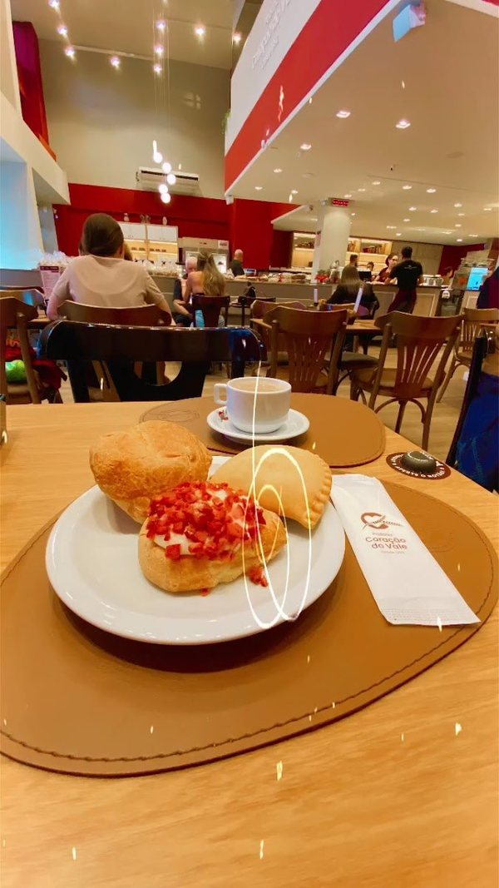
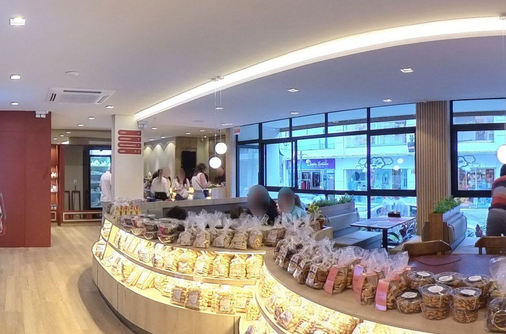
No almoço o buffet é por quilo, com grelhados. Para saber o cardápio do dia, pergunte no WhatsApp.
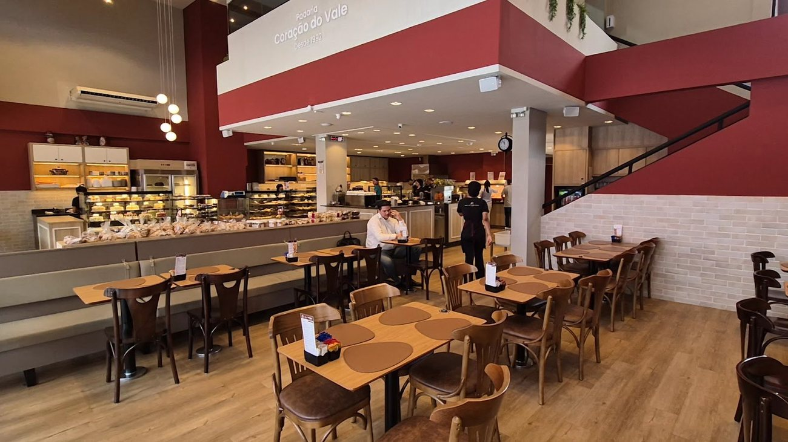
Perguntar o cardápio do dia“Buffet por quilo com poucos pratos mas bem gostosos.”
destaque das avaliações no Google
O café da tarde também é buffet. Na vitrine, tortas, bolos e salgados; para acompanhar, café e chocolate quente.
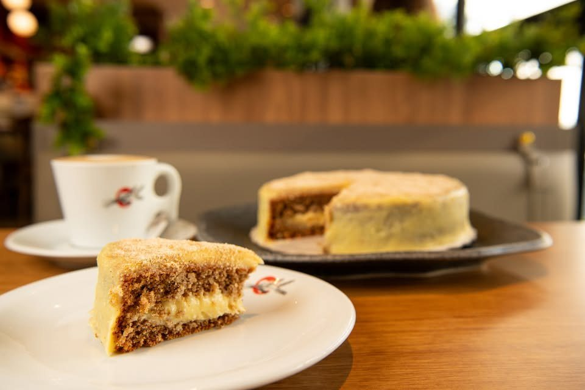
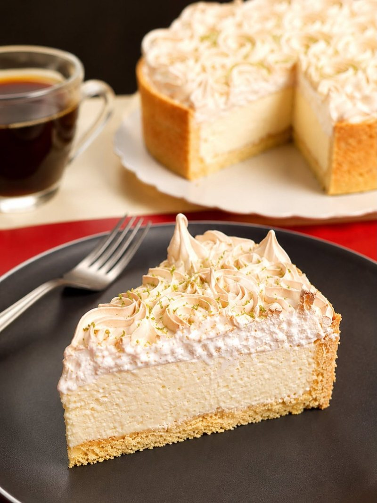
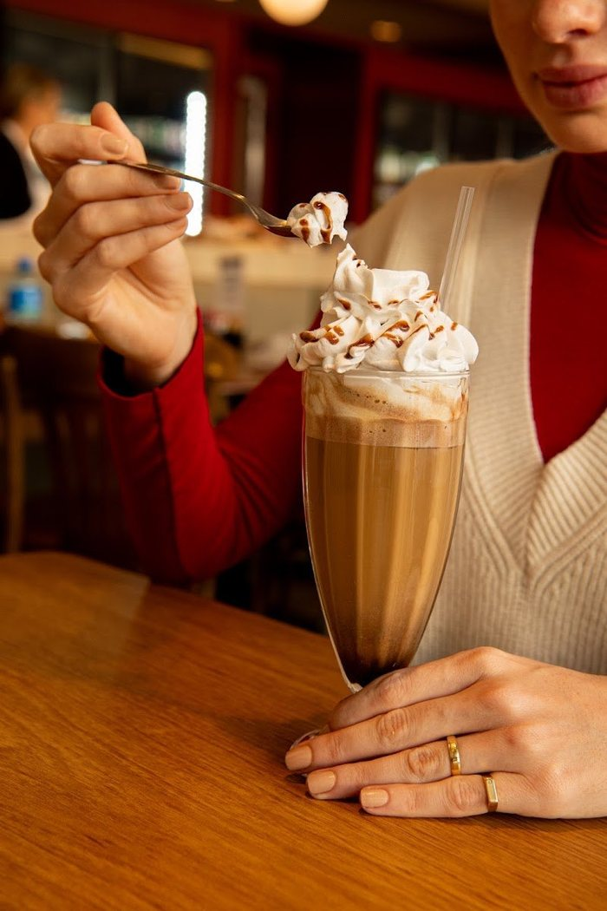
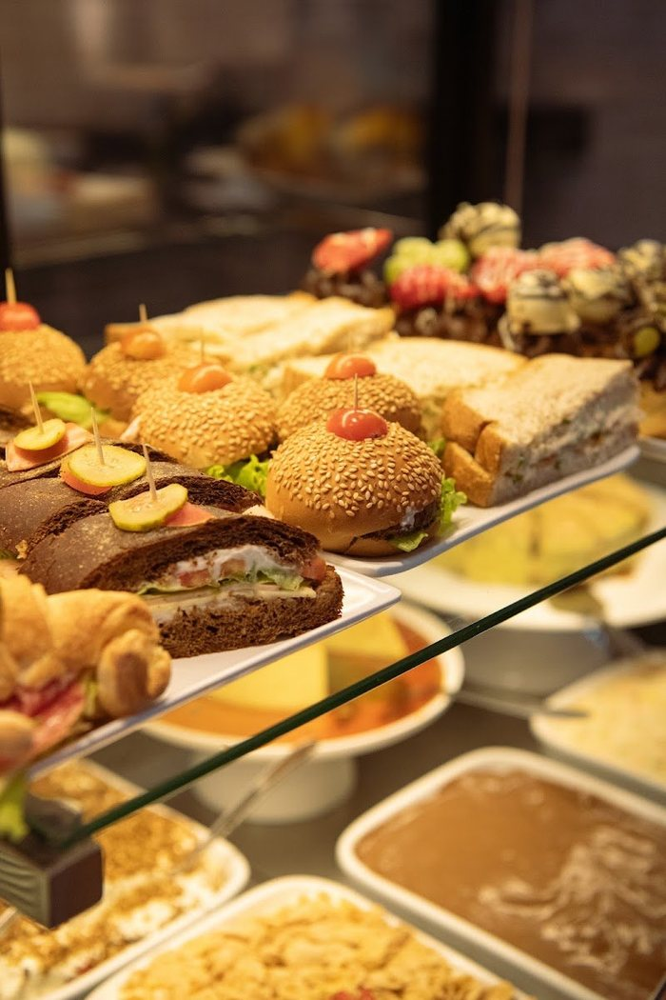

Dia das Crianças 2026
Lancheira especial disponível só nos dias 09, 10 e 12/10, com retirada na padaria ou entrega. Quantidades limitadas.
Valor: consulte no WhatsApp.
Perguntar sobre a lancheira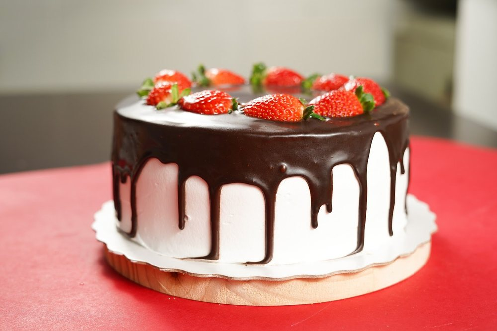
Bolos e tortas
Encomendas de bolos e tortas, prazos e valores: a confirmar com a padaria. Mande a data e o que você precisa.
Consultar encomendaFestival Gastronômico de Gaspar 2026
Foi o prato da padaria no festival da cidade, em março de 2026.
Desde 24 de abril de 2025 a padaria funciona no prédio novo da Cel. Aristiliano Ramos. Role para o lado para ver.
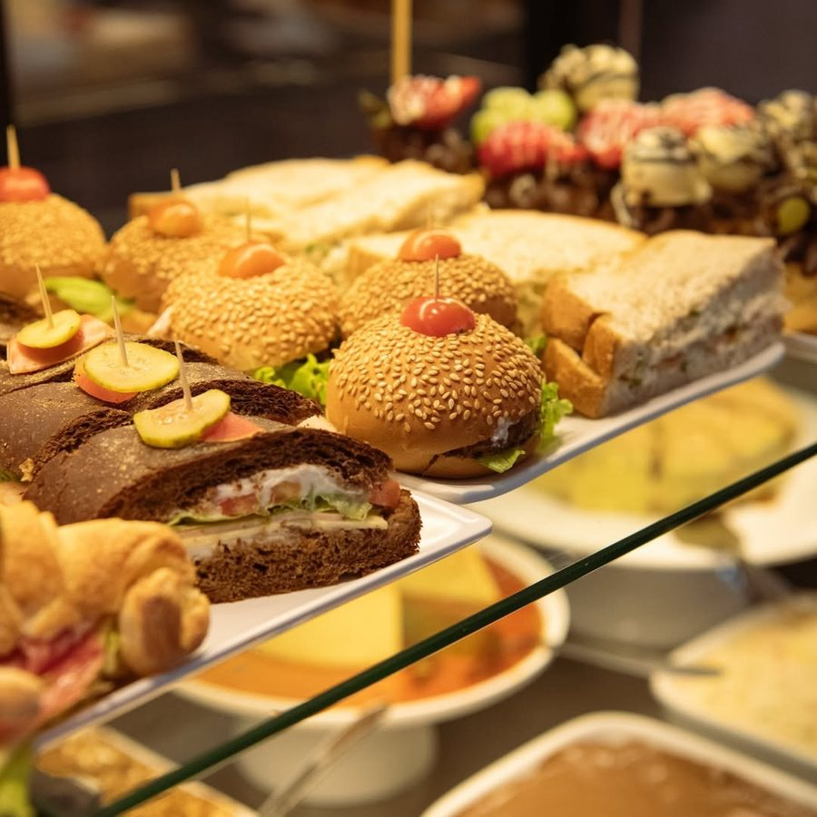
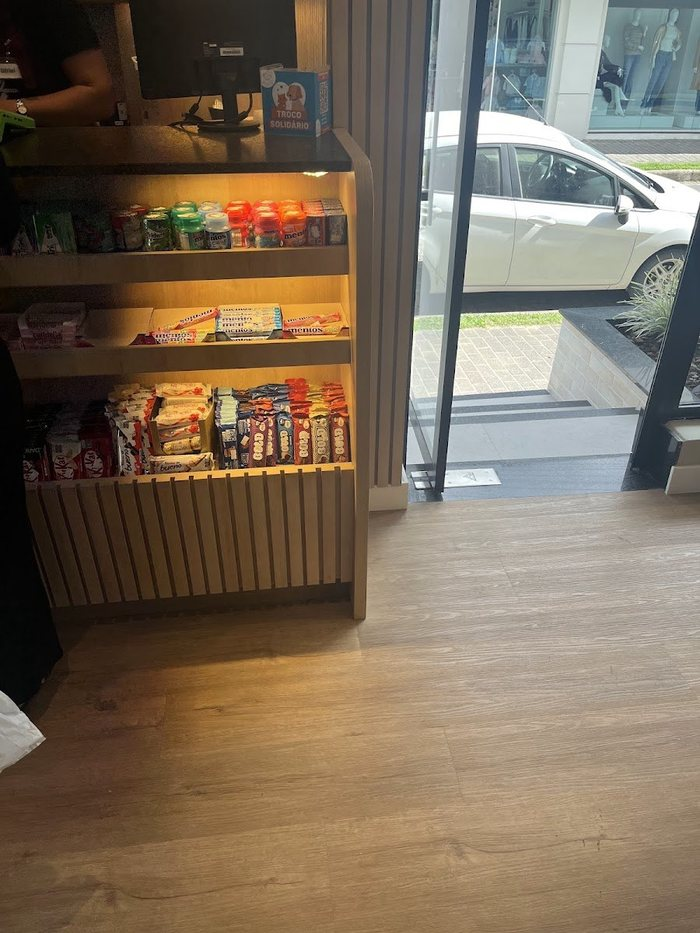
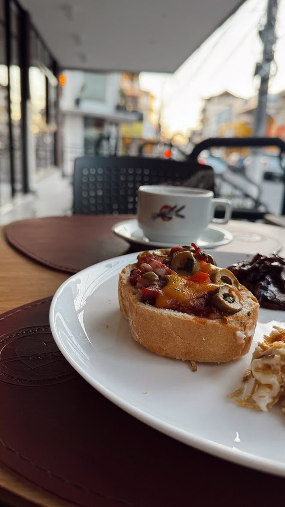
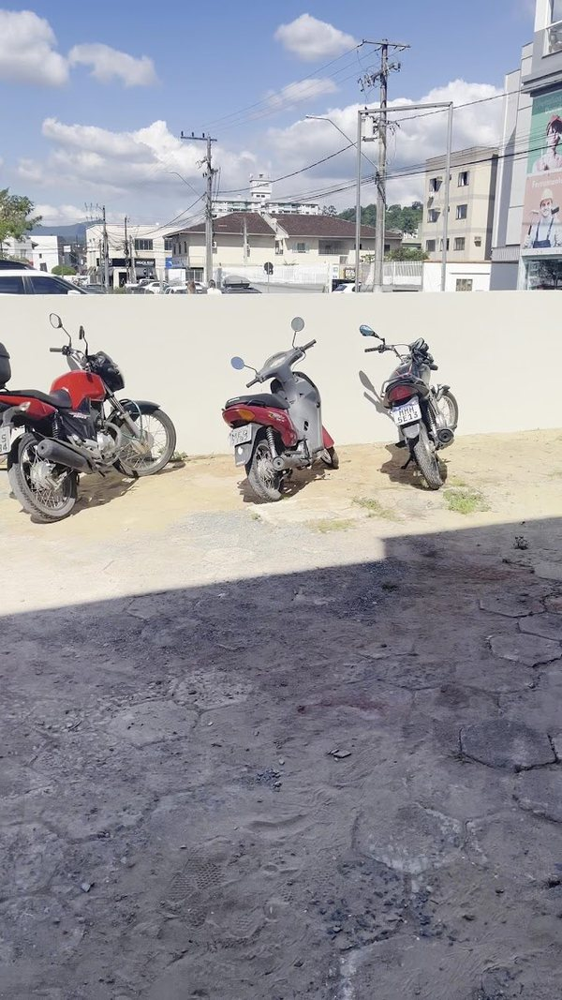
“Sabores que contam histórias”
“adorei o botão na mesa para chamar o atendente”
Andrei Schure Adriano, 5★, nov/2025
“Lugar calmo com boa comida e pessoas simpática”
destaque do Google
“Ótima opção em Gaspar”
Cleber JR, 5★, jul/2026
R. Cel. Aristiliano Ramos, 199
Centro · Gaspar/SC · CEP 89110-067
Estacionamento conveniado em anexo.
Abrir no mapaFeriado de 12/10: horário a confirmar.